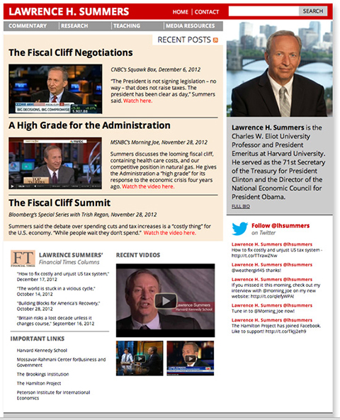
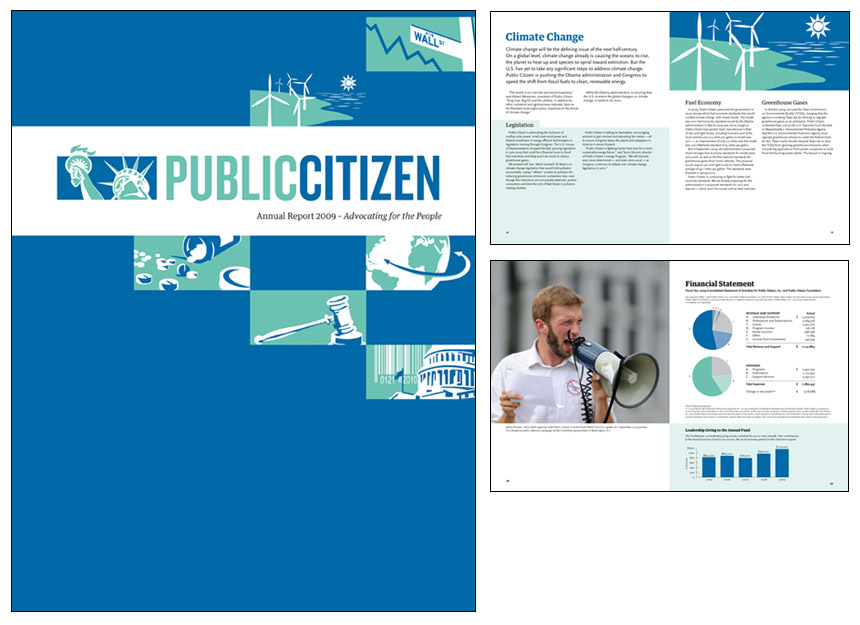
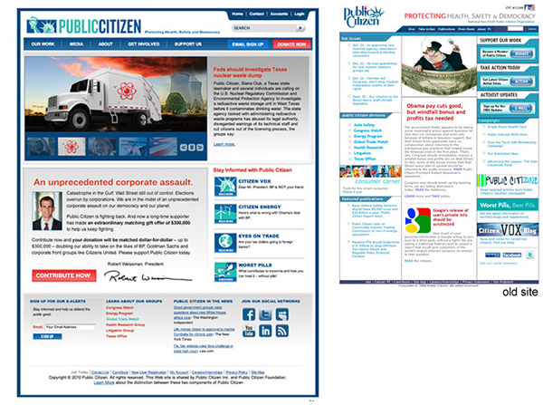
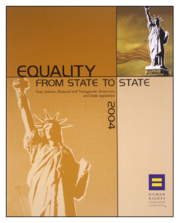
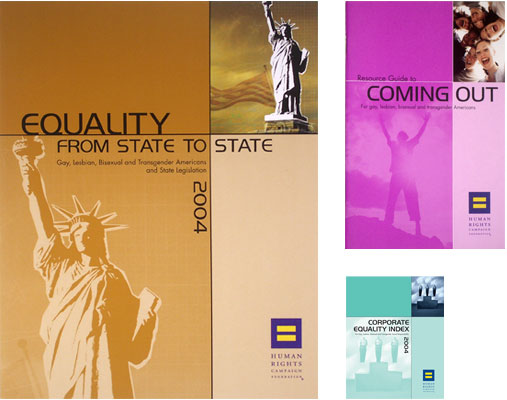
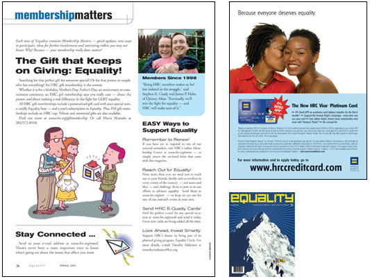

<!DOCTYPE html>
<html lang="en">
	<head>
    	<meta charset="utf-8">
    	<meta name="James Decker LLC" content="Your description goes here">
    	<meta name="graphic design, Washington, DC" content="one, two, three">
			<meta name="viewport" content="width=device-width, initial-scale=1.0">

		<title>James Decker, Graphic Designer</title>

		<!-- external CSS link -->
		<link rel="stylesheet" href="css/reset.css">
		<link rel="stylesheet" href="css/style.css">
		<link link href="http://fonts.googleapis.com/css?family=Open+Sans:300italic,400italic,700italic,400,700,300,800" rel="stylesheet" type="text/css">

	</head>
	<body>
		<div class="header-cont">
		<div class="header-main">
		<div class="header-name">
		<h1>James Decker, Creative</h1>
			</div>
			<nav>
				<ul>
					<li><a href="http://www.linkedin.com/in/thinkdamnit" target="_blank"></li>
					<li><a href="http://twitter.com/thinkdamnit" target="_blank"></a></li>
				</ul>
			</nav>
		</div>
	</div>

		<div class="container clearfix">
				<div class="content">
<h2>
	<b>Why:</b> Successful graphic design is not only style, rather it is the product of critical thinking and resourcefulness that deliver the results that matter.</h2>
	<br>
	<h2><b>Who:</b>Beginning in 1999, I helped a leading civil rights organization achieve unparalleled success by serving as Associate Director for Design at the Human Rights Campaign. Then in 2008, I reinvigorated the modern consumer rights movement by serving as lead designer at Public Citizen. A graduate of Eastern Michigan University, I majored in philosophy and graphic design. Currently, I'm working for a government consulting firm, Harvard University and the Watergate Complex providing an array of design and creative services. </h2>
<br>
<h2><b>How:</b> Specializing in service to non-profits, academic and entrepreneurial enterprise: web development, copy writing, advertising, strategic communications, branding, social media, 508 compliance, reports, presentations, and installation graphics.</h2>
	 </div>

	<div class="accordion">
		<div class="accordion-section">
			<a class="accordion-section-title" href="#accordion-1">Lawerence Summers</a>
			<div id="accordion-1" class="accordion-section-content">
<!-- <div class="bodydiv"> -->
<div class="larry">

</div>
<p class="pbody">In late 2012, I was chosen to design and implement the personal website for<a href="http://larrysummers.com" target="_blank"> Lawrence H. Summers,</a> former U.S. Treasury Secretary and President of Harvard University.  This included ongoing research, online strategy and client training.<br>
<br>
Mr. Summers now uses the site to successfully disseminate his ideas to the media, students and the general public. The new site emphasized content by using a clear hierarchy and simple user interface. The result was clear, elegant and direct.</p>
<!-- </div> -->

			</div><!--end .accordion-section-content-->
		</div><!--end .accordion-section-->

		<div class="accordion-section">
			<a class="accordion-section-title" href="#accordion-2">Public Citizen</a>
			<div id="accordion-2" class="accordion-section-content">
				<div id="slideshowPC_alt">
				 
				</div>
	<div class="bodydiv">
	<p class="pbody"> For over 40 years, <a href="http://citizen.org" target="_blank">Public Citizen</a> has successfully championed the public interest.  Focused on a diverse array of policy issues, including economic justice, auto safety, health care reform and climate change, Public Citizen continues to lead the way, taking a stand during these challenging times.<br>
<br>
In 2008, I joined Public Citizen’s team to make significant improvements to its communications program, contributing to direct marketing and content stragegy, including a comprehensive redesign of its logo, website and publications.	</p>
	</div>

				<div id="slideshowPC">
   <div>
     
   </div>
   <div>
     
   </div>
</div>
			</div><!--end .accordion-section-content-->
		</div><!--end .accordion-section-->

		<div class="accordion-section">
			<a class="accordion-section-title" href="#accordion-3">Human Rights Campaign</a>
			<div id="accordion-3" class="accordion-section-content">
	<div id="slideshowHRC_alt">
		
	</div>
<div class="bodydiv">
<p class="pbody">As the largest civil rights organization working to achieve equality for lesbian, gay, bisexual and transgender Americans, the<a href="http://citizen.org" target="_blank"> Human Rights Campaign</a> (HRC) represents a force of more than one million members and supporters nationwide — all committed to making HRC’s vision a reality.<br>
<br>
I came to Washington DC in 1999 to join HRC’s design team, and would later become Design Director from 2002-2005. My time there would help establish HRC’s reputation as an institution which values creativity and design, and would involve numerous projects, including publication design and art direction throughout the organization. My stewardship and passion would help HRC become one of the strongest and most respected non-profit brands today.
</div>
	<div id="slideshowHRC">
		<div>
      
    </div>
    <div>
      
    </div>
 </div>
			</div><!--end .accordion-section-content-->
		</div><!--end .accordion-section-->
	</div><!--end .accordion-->
	</div>
		<div class="footer">
			<div class="player">
			<audio controls>
  <source src="Compared to What.mp3" type="audio/mpeg">
	</source>
		</audio>
	</div>
			<p class="pfooter"> &copy; James Decker LLC</p>
		</div>

</body>
	<script src="https://ajax.googleapis.com/ajax/libs/jquery/2.1.4/jquery.min.js"></script>
<script src="js/index.js"></script>
</html>

<!-- <audio id="music" preload="true">
  <source src="http://www.alexkatz.me/codepen/music/interlude.mp3">
			<source src="http://www.alexkatz.me/codepen/music/interlude.ogg">
	</audio>
<div id="audioplayer">
	<button id="pButton" class="play" onclick="play()"></button>
  <div id="timeline">
  		  <div id="playhead"></div>
  </div>
</div> -->
